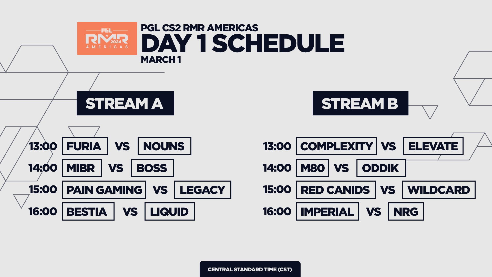

O MELHOR E MAIOR CAMPEONATO DE ESPORTS DO MUNDO!!!!!

O primeiro major de Counter Strike 2 vai comecar em breve
as 17 vagas no campeonato que tem o continente europeu ja estao decididas

A europa sempre foi o continente mais forte, quando o assunto eh counter
strike competitivo, mas nos ultimos anos essa distancia parece estar
ficando cada vez maior, o ultimo time nao europeu a ser campeao de um
major, foram os americanos da Cloud9 no ELEAGUE Major 2018.
O continente europeu contem os times que sao os grandes candidatos ao
titulo, segue alguns destaques
Faze Clan
A Faze sempre foi um time muito forte desda sua formacao em 2016, a
equipe sempre contou com jogadores de muito destaque, ate chegarem a um
dos melhores time da historia do cs formado por Karrigan, Rain, Twistzz,
Broky e Ropz, o time decolou e ganharam muitos titulos, ate que no PGL Antuerpia 2022, eles conquistaram o tão sonhado titulo de Major.
Para esse PGL Copenhage Major 2024, a equipe chega como uma das favoritas, mesmo depois da
polemica saida do jogador Twistzz, o time vem conseguindo bons
resultados com Frozen, seu novo integrante, na IEM Katowice 2024, que foi o
grande campeonato presedente ao Major a equipe fez uma boa campanha,
parando somente na final, quando a jovem estrela russa Donk, fez uma das
maiores atuações da historia desse esporte e levou o trofeu para casa,
junto com o seu time Spirit.
mais informacoes sobre a Faze
Team Vitality
A Vitality esta a caminho de Copenhage para defender o seu titulo, Blast Paris Major 2023, com o apoio da torcida, o
time frances nao teve dificuldades para conquistar o major em sua casa,
sendo o primeiro campeao da historia dos majors a ganhar sem perder
nenhum mapa sequer e sem precisar de overtimes, o time montou uma line
mista entre fraceses e dinamarqueses, essa combinacao deu muito certo, a
experiencia do trio da dinamarca Dupreeh, Magisk e o Coach Zonic junto
com a lideranca de Apex e o talento de Zywoo, a equipe sobrou no
campeonato, Zywoo foi eleito MVP e assim entrando na lista dos maiores
jogadores da historia do Counter Strike.
A equipe passou por muitas trocas de jogadores nos ultimos meses, todos
os dinamarqueses deixaram o time, a organizacao francesa confiou no
ingles Mezzi, o no talento do jovem israelita FlameZ, para tentar o back
to back em Copenhage, eles nao vem tento bons resultados recentemente,
em Katowice, eles tambem chegaram como um dos favoritos, mas acabaram
sentido o amargo sabor da ultima colocao, deixando Katowice sem ganhar
nenhuma partida, mesmo assim a Vitality chega com muito status para o
PGL Major Copenhage 2024, pois um time que tem Zywoo jamais pode ser desacreditado.
mais informacoes sobre a Vitality
Team Spirit
Spirit sempre foi um bom time de cs, nos ultimos 4
majors, eles pegaram playoff em 2,que eh um bom retrospecto, mas a
comunidade de Counter Strike nunca os colocou em uma posicao de
favoritos ao major, porem uma jovem estrela russa estava predestinado a
mudar a historia da organizacao. Donk um garoto de 16 anos, comecou a
chamar basatante antecao jogando pela spirit academy em 2022, ele era
acima da media de seus adversarios, e o seu estilo de jogo completamente
agressivo, o que esta raro nos jogadores de cs no meta atual, fez ele
subir para a equipe principal em julho de 2023, junto com Zontix e
Artfrost, outros 2 jovens que estavam jogando muito bem pelo time
academy, apartir desse momento o time da Spirit atingiu um novo patamar
competitivo.
Bem... nao tem como falar de Spirit sem falar de Donk, depois que o
jovem entrou no time, eles comecaram a ganhar com facilidade,
campeonatos menores e muitos deles online, o nivel da equipe subiu
novamente quando aconteceu a substituicao de Artfrost por Sh1ro, que eh um
dos melhores AWPs do mundo, e o time seguia melhorando com Donk sempre
jogando muito bem, mas o fato dele nao estar jogando contra os melhores
e nao esta jogando em lan, dava motivo para uma parte da comunidade
acreditar que ele nao tinha nivel para jogar contra os melhores, mas
tudo mudou quando ele chegou na IEM Katowice 2024, o campeonato que acontece na
Alemanha eh um dos mais renomados da historia do cs, e junta os melhores
times do mundo, entre eles, la estava a Spirit, com muita confianca em
sua jovem promessa Donk, e para aqueles que viam-o jogar online e diziam
que ele seria um dos melhores jogadores do mundo, Katowice serviu para
comprovar essa teoria, Donk nao se intimidou a jogar em lan, contra os
melhores times do mundo, em frente a um grande publico, pelo contratio,
ele fez uma das maiores atuacoes individuas da historia, sendo campeao e
MVP de Katowice, se Donk e companhia apresentarem o mesmo nivel que eles
mostraram na Alemanha, a chance deles levarem o trofeu do
PGL Copenhage Major 2024 para Moskou sao bem altas.
mais informacoes sobre a Spirit
A lendaria organizacao Natus Vincere , ou simplismente
NAVI, que foi campea em PGL Major Estocolmo 2021, sempre chega muito bem
nos majors, mas essa sera a primera vez em muito tempo, que eles irao
jogar sem sua grande estrela S1mple, apesar de nao terem chegado a os
playoffs de Katowice, o time liderado por Aleksib e comandado pelo coach
Bl3de, tem muitos respeito dos adversarios e vao brigar por fora para
levantarem novamente um trofeu de major.
o time da G2 Esports eh sempre uma icognita em majors, o time
sempre chega como um dos favoritos, mas nao consegue desmostra o
favoritismo dentro do servidor, a equipe foi finalista no PGL Estocolmo Major
2021, mas depois da dura derrota para a Navi, o time deu disband e
prefiriu comecar um projeto praticamente do zero, mantendo somente os
primos Hunter e Niko na line titular, contrataram por um valor altissimo
o jovem Monesy, que com o tempo realmente se mostrou um exelente
jogador, e com ele a organizacao ganhou renomados titulos, como a IEM Cologne
e IEM Katowice, ambos no ano de 2023, apesar dos titulos, a torcida sempre
manteve duras criticas direcionadas a o IGL Hooxi, mas a organizacao
confiou na lideranca dele e o manteve no time, com isso eles vao jogar o PGL MAJOR
Copenhage 2024 confiando que a equipe, possa desempenhar bem e finalmente
trazer o ultimo trofeu que falta para a G2, assim consagrando Monesy
como um dos melhores jogadores do mundo e Niko como um dos melhores da
historia.
Virtus.pro
eh um time que sempre chega sem muitos olofotes, mas sempre da muito
trabalho nos major, assim ele conquistam o IEM Rio Major 2022, com um estilo
de jogo unico, Jame e seus comandados vao tentar o triunfo no major
novamente. apesar deles nao terem nenhum resultado relevante nos ultimos
tempos, conseguiram um 3-0 no RMR, entao assim como foi no Rio de Janeiro, eles chegam sem muitas esperancas, mas eh um time muito bom que
pode surpreender.
O time da MOUZ aposta na juventude para tentar conquistar seu
primeiro major o, time que teve exelentes resultados no final do ano
passado, entra eles o titulo da ESL Pro League 2023, gracas a esses
resultados a equipe acabou chamando bastante atencao, principalmente o
jogador Frozen, que depois do titulo da Pro League, trocou o time da
Mouz pela poderosa Faze, mesmo assim o time que recebe as ordens do
jovem capitao Siuhy, se manteve muito forte, e tiveram uma perfeita
campanha no RMR sem perder nenhum mapa, ganhando inclusive da Spirit,
por tanto MOUZ, mais um time para ficar de olho.
Cloud9 eh um daqueles times que no papel eh extremamente forte, mas a
equipe russa nao esta conseguindo confirmar esse favoritismo dentro do
servidor, quando o time foi formado em julho de 2023, muitos diziam
que seria um time muito vitorioso, mas infelizmente nao foi isso que
aconteceu, o time se mostrou muito instavel e completamente diferente
daquilo que a comunidade esperava, mesmo assim continua sendo um time
muito forte, dos 5 jogadores que la estao hoje, 4 ja sabem como eh a
sensacao de levantar um trofeu de major, entao olho neles.
Asia no Counter Strick
a Asia eh um continente muito ligado a os esports, alguns paises de la, o governo reconhece os jogadores como verdadeiros atletas que represantam o pais internacionalmente, e isso ajuda eles a terem muito sucesso em alguns jogos, como o League of Legends ou Dota 2, mas no cs, infelimente eles ainda nao conseguiram atingir grandes resultados, por tanto o continente tem somente 2 vagas no major.

The Mongolz, um time formado por jogadores da Mongolia, ira representar o continente Oriental, assim como fizeram em Paris 2023, e antes quando jogavam pela tag da IHC, foram para Antuerpia e vinheram para o Rio de Janeiro, ou seja, eh um time que ja tem bastante experiencia em majors, inclusive eles sao uma pedra no sapato dos brasileiros, contra tudo e contra todos, eles ganharam da line brasileira da 00Nation em pleno IEM Rio Major 2022, no mesmo ano pelo PGL Major Antuerpia, eles jogaram uma partida muito equilibrada contra a Imperial mas nessa ocasiacao a equipe brasileira saiu com a vitoria, recentemente no play-in da IEM Katowice 2024, ele bateram a Furia, o melhor time brasileiro no momento, entao se nao tomar cuidado contra a The Mongolz, vai mamar.
Lynn Vision eh o time que vem para representar a China, pais onde o sports eh gigante, tanto que o segundo major de 2024 acontecera na cidade de Xangai, Lynn Vision e Ecstatic, sao as duas unicas equipes que nao tem pelo menos um jogador que ja jogou major anteriormente, por isso o jovem time chines chega com espectativas baixas, mas monstrou um cs bonito no RMR e se pegar brasileiro no major, vai ser jogo equilibrado.
Times das americas no primeiro major de Counter Strike 2
o RMR que ira classificar os times das americas, vai comecar no dia 1 de marco, o campeonato conta com 16 times (8 da america do sul e 8 da america do norte), que vao brigar por 5 vagas no major

Furia
MIBR
Legacy
Imperial
BESTIA
ODDIK
paiN Gaming
RED Canids Kalunga
Wildcard Gaming
Complexity
M80
Team Liquid
BOSS
Elevate
Nouns Esports
NRG